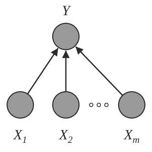
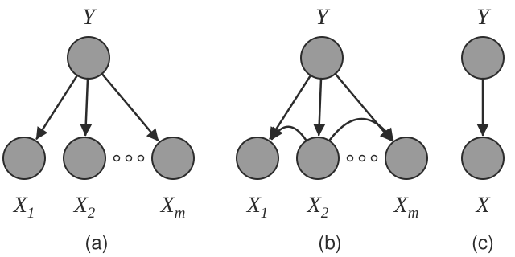
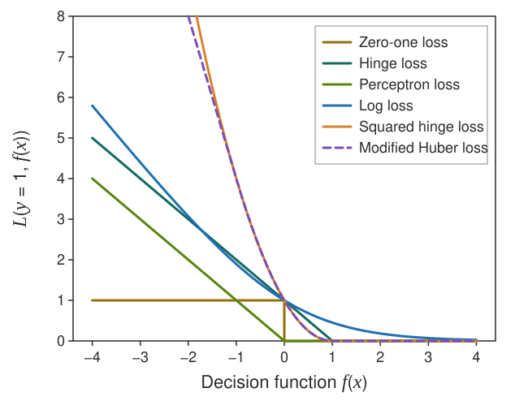
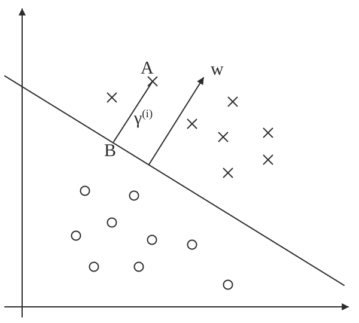

5.4. classification#
5.4.1. overview#
regressors don’t classify well
e.g. outliers skew fit
asymptotic classifier - assumes infinite data
linear classifer \(\implies\) boundaries are hyperplanes
discriminative - model \(P(Y\vert X)\) directly

usually lower bias \(\implies\)smaller asymptotic error
slow convergence ~ \(O(p)\)
generative - model \(P(X, Y) = P(X\vert Y) P(Y)\)

usually higher bias \(\implies\) can handle missing data
this is because we assume some underlying X
fast convergence ~ \(O[\log(p)]\)
decision theory - models don’t require finding \(p(y \vert x)\) at all
5.4.2. binary classification#
\(\hat{y} = \text{sign}(\theta^T x)\)
usually \(\theta^Tx\) includes bias term, but generally we don’t want to regularize bias
Model |
\(\mathbf{\hat{\theta}}\) objective (minimize) |
|---|---|
Perceptron |
\(\corange{\sum_i \max(0, -y_i \cdot \theta^T x_i)}\) |
Linear SVM |
\(\cblue{\theta^T\theta} + \corange{C \sum_i \max(0,1-y_i \cdot \theta^T x_i)}\) |
Logistic regression |
\(\cblue{\theta^T\theta} + \corange{C \sum_i \log[1+\exp(-y_i \cdot \theta^T x_i)]}\) |
regularizer + loss
svm, perceptron use +1/-1, logistic use 1/0
perceptron - tries to find separating hyperplane
whenever misclassified, update w
can add in delta term to maximize margin

5.4.3. multiclass classification#
reducing multiclass (K categories) to binary
one-against-all
train K binary classifiers
class i = positive otherwise negative
take max of predictions
one-vs-one = all-vs-all
train \(C(K, 2)\) binary classifiers
labels are class i and class j
inference - any class can get up to k-1 votes, must decide how to break ties
flaws - learning only optimizes local correctness
single classifier - one hot vector encoding
multiclass perceptron (Kesler)
if label=i, want \(\theta_i ^Tx > \theta_j^T x \quad \forall j\)
if not, update \(\theta_i\) and \(\theta_j\)* accordingly
kessler construction
- \[\begin{split}\theta = [\theta_1 ... \theta_k] $$<!-- --> - want $\theta_i^T x > \theta_j^T x \quad \forall j$ - rewrite $\theta^T \phi (x,i) > \theta^T \phi (x,j) \quad \forall j$ - here $\phi (x, i)$ puts x in the ith spot and zeros elsewhere - $\phi$ is often used for feature representation - define margin: $$\Delta (y,y') = \begin{cases} \delta& if \: y \neq y' \\ 0& if \: y=y'\end{cases}$$<!-- --> - check if $$y=\text{argmax}_{y'} \theta^T \phi(x,y') + \delta (y,y')\end{split}\]
multiclass SVMs (Crammer & Singer)
minimize total norm of weights s.t. true label score is at least 1 more than second best label
multinomial logistic regression = multi-class log-linear model (softmax on outputs)
we control the peakedness of this by dividing by stddev
5.4.4. discriminative#
5.4.4.1. logistic regression#
- \[ \begin{align}\begin{aligned}p(Y=1\vert x, \theta) = \text{logistic}(\theta^Tx)$$<!-- --> 1. assume Y ~ $\text{Bernoulli}(p)$ with $p=\text{logistic}(\theta^Tx$) 2. can solve this online with GD of ***likelihood*** 3. better to solve with iteratively reweighted least squares - $Logit(p) = \log[p / (1-p)] = \theta^Tx$ - multiway logistic classification - assume $$P(Y^k=1\vert x, \theta) = \frac{e^{\theta_k^Tx}}{\sum_i e^{\theta_i^Tx}}$$, just as arises from class-conditional exponential family distributions - logistic weight change represents change in odds - fitting requires penalty on weights, otherwise they might not converge (i.e. go to infinity)\\### binary models\\- probit (binary) regression - $$p(Y=1\vert x, \theta) = \phi(\theta^Tx)$$ where $\phi$ is the Gaussian CDF - pretty similar to logistic - noise-OR (binary) model - consider $Y = X_1 \lor X_2 \lor … X_m$ where each has a probability of failing - define $\theta$ to be the failure probabilities - $$p(Y=1\vert x, \theta) = 1-e^{-\theta^Tx}$$<!-- --> - other (binary) exponential models - $$p(Y=1\vert x, \theta) = 1-e^{-\theta^Tx}$$ but x doesn't have to be binary - *complementary log-log model*: $$p(Y=1\vert x, \theta) = 1-\text{exp}[e^{-\theta^Tx}]\end{aligned}\end{align} \]
5.4.4.2. svms#
svm benefits
maximum margin separator generalizes well
kernel trick makes it very nonlinear
nonparametric - retains training examples (although often get rid of many)
at test time, can’t just store w - have to store support vectors

- \[\begin{split}\hat{y} =\begin{cases} 1 &\text{if } w^Tx +b \geq 0 \\ -1 &\text{otherwise}\end{cases}$$<!-- --> - $$\hat{\theta} = \text{argmin} \:\frac{1}{2} \vert \vert \theta\vert \vert ^2 \\s.t. \: y^{(i)}(\theta^Tx^{(i)}+b)\geq1, i = 1,...,m$$<!-- --> - *functional margin* $\gamma^{(i)} = y^{(i)} (\theta^T x +b)$ - limit the size of $(\theta, b)$ so we can't arbitrarily increase functional margin - function margin $\hat{\gamma}$ is smallest functional margin in a training set - *geometric margin* = functional margin / $\vert \vert \theta \vert \vert $ - if $\vert \vert \theta \vert \vert =1$, then same as functional margin - invariant to scaling of w - derived from maximizing margin: $$\max \: \gamma \\\: s.t. \: y^{(i)} (\theta^T x^{(i)} + b) \geq \gamma, i=1,..,m\\ \vert \vert \theta\vert \vert =1\end{split}\]
difficult to solve, especially because of \(\vert \vert w\vert \vert =1\) constraint
assume \(\hat{\gamma}=1\) ~ just a scaling factor
now we are maximizing \(1/\vert \vert w\vert \vert \)
soft margin classifier - allows misclassifications
assigns them penalty proportional to distance required to move them back to correct side
min $\(\frac{1}{2}\vert \vert \theta\vert \vert ^2 \cblue{ + C \sum_i^n \epsilon_i} \\s.t. y^{(i)} (\theta^T x^{(i)} + b) \geq 1 \cblue{- \epsilon_i}, i=1:m \\ \cblue{\epsilon_i \geq0, 1:m}\)$
large C can lead to overfitting
benefits
number of parameters remains the same (and most are set to 0)
we only care about support vectors
maximizing margin is like regularization: reduces overfitting
actually solve dual formulation (which only requires calculating dot product) - QP
replace dot product \(x_j \cdot x_k\) with kernel function \(K(x_j, x_k)\), that computes dot product in expanded feature space
linear \(K(x,z) = x^Tz\)
polynomial \(K (x, z) = (1+x^Tz)^d\)
radial basis kernel \(K (x, z) = \exp(-r\vert \vert x-z\vert \vert ^2)\)
transforming then computing is O(\(m^2\)), but this is just \(O(m)\)
practical guide
use m numbers to represent categorical features
scale before applying
fill in missing values
start with RBF
valid kernel: kernel matrix is Psd
5.4.4.3. decision trees / rfs - Russell & Norvig 18.3; Hastie, Tibshirani & Friedman 9.2.1-9.2.3#
from “Artificial Intelligence - A Modern Approach” and “The Elements of Statistical Learning”
follow rules: predict based on prob distr. of points in same leaf you end up in
inductive bias
prefer small trees
prefer tres with high IG near root
good for certain types of problems
instances are attribute-value pairs
target function has discrete output values
disjunctive descriptions may be required
training data may have errors
training data may have missing attributes
greedy - use statistical test to figure out which attribute is best
split on this attribute then repeat
growing algorithm
information gain - decrease in entropy
weight resulting branches by their probs
biased towards attributes with many values
use GainRatio = Gain/SplitInformation
can incorporate SplitInformation - discourages selection of attributes with many uniformly distributed values
sometimes SplitInformation is very low (when almost all attributes are in one category)
might want to filter using Gain then use GainRatio
regression tree
must decide when to stop splitting and start applying linear regression
must minimize SSE
can get stuck in local optima
avoid overfitting
empirically, early stopping is worse than overfitting then pruning (bc it doesn’t see combinations of useful attributes)
overfit then prune - proven more succesful
reduced-error pruning - prune only if doesn’t decrease error on validation set
\(\chi^2\) pruning - test if each split is statistically significant with \(\chi^2\) test
rule post-pruning = cost-complexity pruning
infer the decision tree from the training set, growing the tree until the training data is fit as well as possible and allowing overfitting to occur.
convert the learned tree into an equivalent set of rules by creating one rule for each path from the root node to a leaf node.
these rules are easier to work with, have no structure
prune (generalize) each rule by removing any preconditions that result in improving its estimated accuracy.
sort the pruned rules by their estimated accuracy, and consider them in this sequence when classifying subsequent instances.
incorporating continuous-valued attributes
choose candidate thresholds which separate examples that differ in their target classification
just evaluate them all
missing values
could fill in most common value
could assign values probabilistically
differing costs
can bias the tree to favor low-cost attributes
ex. divide gain by the cost of the attribute
high variance - instability - small changes in data yield changes to tree
many trees
bagging = bootstrap aggregation - an ensemble method
bootstrap - resampling with replacement
train multiple models by randomly drawing new training data
bootstrap with replacement can keep the sampling size the same as the original size
random forest - for each split of each tree, choose from only m of the p possible features
smaller m decorrelates trees, reduces variance
RF with m=p \(\implies\) bagging
voting
consensus: take the majority vote
average: take average of distribution of votes
reduces variance, better for improving more variable (unstable) models
adaboost - weight models based on their performance
optimal classification trees - simultaneously optimize all splits, not one at a time
importance scores
dataset-level
for all splits where the feature was used, measure how much variance reduced (either summed or averaged over splits)
the sum of importances is scaled to 1
prediction-level: go through the splits and add up the changes (one change per each split) for each features
note: this bakes in interactions of other variables
ours: only apply rules based on this variable (all else constant)
why not perturbation based?
trees group things, which can be nice
trees are unstable
5.4.4.4. decision rules#
if-thens, rule can contain ands
good rules have large support and high accuracy (they tradeoff)
decision list is ordered, decision set is not (requires way to resolve rules)
most common rules: Gini - classification, variance - regression
ways to learn rules
oneR - learn from a single feature
sequential covering - iteratively learn rules and then remove data points which are covered
ex rule could be learn decision tree and only take purest node
bayesian rule lists - use pre-mined frequent patterns
generally more interpretable than trees, but doesn’t work well for regression
features often have to be categorical
rulefit
learns a sparse linear model with the original features and also a number of new features that are decision rules
train trees and extract rules from them - these become features in a sparse linear model
feature importance becomes a little stickier….
5.4.4.5. gaussian processes#
model the relationship between a function’s values at different inputs as a multivariate gaussian
the covariance of the gaussisan is given by a kernel (e.g. rbf kernel says that nearby function values are correlated = smooth function)
when you make predictions, you condition on the values you see to get the distribution of outputs for other values
5.4.5. generative#
5.4.5.1. gaussian class-conditioned classifiers#
binary case: posterior probability $\(p(Y=1\vert x, \theta)\)\( is a sigmoid \)\frac{1}{1+e^{-z}}\( where \)z = \beta^Tx+\gamma$
multiclass extends to softmax function: \(\frac{e^{\beta_k^Tx}}{\sum_i e^{\beta_i^Tx}}\) - \(\beta\)s can be used for dim reduction
probabilistic interpretation
assumes classes are distributed as different Gaussians
it turns out this yields posterior probability in the form of sigmoids / softmax
only a linear classifier when covariance matrices are the same (LDA)
otherwise a quadratic classifier (like QDA) - decision boundary is quadratic
MLE for estimates are pretty intuitive
decision boundary are points satisfying \(P(C_i\vert X) = P(C_j\vert X)\)
regularized discriminant analysis - shrink the separate covariance matrices towards a common matrix
\(\Sigma_k = \alpha \Sigma_k + (1-\alpha) \Sigma\)
parameter estimation: treat each feature attribute and class label as random variables
assume distributions for these
for 1D Gaussian, just set mean and var to sample mean and sample var
can use directions for dimensionality reduction (class-separation)
5.4.5.2. naive bayes classifier#
assume multinomial \(Y\)
with clever tricks, can produce $\(P(Y^i=1\vert x, \eta)\)$ again as a softmax
let $\(y_1,...y_l\)$ be the classes of Y
want Posterior \(\cpurple{P(Y\vert X)} = \frac{\cblue{P(X\vert Y)}(\corange{P(Y)}}{\cgreen{P(X)}}\)
likelihood, prior, evidence
MAP rule - maximum a posterior rule
use prior P(Y)
given x, predict $\(\hat{y}=\text{argmax}_y \cpurple{P(y\vert X_1,...,X_p)}=\text{argmax}_y \cblue{P(X_1,...,X_p\vert y)} \corange{P(y)}\)$
generally ignore constant denominator
naive assumption - assume that all input attributes are conditionally independent given y
- \[P(X_1,...,X_p\vert Y) = P(X_1\vert Y)\cdot...\cdot P(X_p\vert Y) = \prod_i P(X_i\vert Y)$$<!-- --> - learning - learn $L$ priors $$P(y_1),P(y_2),...,P(y_l)\]
for i in 1:\(\vert Y \vert\)
learn \(P(X \vert y_i)\)
for discrete case we store \(P(X_j\vert y_i)\), otherwise we assume a prob. distr. form
naive: $\(\vert Y\vert \cdot (\vert X_1\vert + \vert X_2\vert + ... + \vert X_p\vert )\)$ distributions
otherwise: $\(\vert Y\vert \cdot (\vert X_1\vert \cdot \vert X_2\vert \cdot ... \cdot \vert X_p\vert )\)$
smoothing - used to fill in \(0\)s
\(P(x_i\vert y_j) = \frac{N(x_i, y_j) +1}{N(y_j)+\vert X_i\vert }\)
then, \(\sum_i P(x_i\vert y_j) = 1\)
5.4.5.3. exponential family class-conditioned classifiers#
includes Gaussian, binomial, Poisson, gamma, Dirichlet
- \[ \begin{align}\begin{aligned}p(x\vert \eta) = \text{exp}[\eta^Tx - a(\eta)] h(x)$$<!-- --> 3. for classification, anything from exponential family will result in posterior probability that is logistic function of a linear function of x\\### text classification\\- bag of words - represent text as a vector of word frequencies X - remove stopwords, stemming, collapsing multiple - NLTK package in python - assumes word order isn't important - can store n-grams - multivariate Bernoulli: $$P(X\vert Y)=P(w_1=true,w_2=false,...\vert Y)\end{aligned}\end{align} \]
multivariate Binomial: $\(P(X\vert Y)=P(w_1=n_1,w_2=n_2,...\vert Y)\)$
this is inherently naive
time complexity
training O(n*average_doc_length_train+\(\vert c\vert \vert dict\vert \))
testing O(\(\vert Y\vert \) average_doc_length_test)
implementation
have symbol for unknown words
underflow prevention - take logs of all probabilities so we don’t get 0
- \[ \begin{align}\begin{aligned}y = \text{argmax }\corange{\log \:P(y)} + \cblue{\sum_i \log \: P(X_i\vert y)}$$<!-- --> - log <span class="corange">prior</span> + log <span class="cblue">likelihood</span>\\## instance-based (nearest neighbors)\\- also called lazy learners = nonparametric models - make Voronoi diagrams - can take majority vote of neighbors or weight them by distance - distance can be Euclidean, cosine, or other - should scale attributes so large-valued features don't dominate - *Mahalanobois* distance metric accounts for covariance between neighbors - in higher dimensions, distances tend to be much farther, worse extrapolation - sometimes need to use *invariant metrics* - ex. rotate digits to find the most similar angle before computing pixel difference - could just augment data, but can be infeasible - computationally costly so we can approximate the curve these rotations make in pixel space with the *invariant tangent line* - stores this line for each point and then find distance as the distance between these lines - comparisons - error rate of 1 NN is never more than twice that of Bayes error\\ ## likelihood calcs\\### single Bernoulli\\- $L(p) = P$[Train \| Bernoulli(p)]= $$P(X_1,...,X_n\vert p)=\prod_i P(X_i\vert p)=\prod_i p^{X_i} (1-p)^{1-X_i}\end{aligned}\end{align} \]
\(=p^x (1-p)^{n-x}\) where x = \(\sum x_i\)
\(\log[L(p)] = \log[p^x (1-p)^{n-x}]=x \log(p) + (n-x) \log(1-p)\)
\(0=\frac{dL(p)}{dp} = \frac{x}{p} - \frac{n-x}{1-p} = \frac{x-xp - np+xp}{p(1-p)}=x-np\)
\(\implies \hat{p} = \frac{x}{n}\)
5.4.5.4. multinomial#
$\(L(\theta) = P(x_1,...,x_n\vert \theta_1,...,\theta_p) = \prod_i^n P(d_i\vert \theta_1,...\theta_p)=\prod_i^n factorials \cdot \theta_1^{x_1},...,\theta_p^{x_p}\)$- ignore factorials because they are always same
require \(\sum \theta_i = 1\)
\(\implies \theta_i = \frac{\sum_{j=1}^n x_{ij}}{N}\) where N is total number of words in all docs
5.4.6. boosting#
adaboost
freund & schapire
reweight data points based on errs of previous weak learners, then train new classifiers
classify as an ensemble
gradient boosting
leo breiman
actually fits the residual errors made by the previous predictors
newer algorithms for gradient boosting (speed / approximations)
xgboost (2014 - popularized around 2016)
implementation of gradient boosted decision trees designed for speed and performance
things like caching, etc.
light gbm (2017)
can get gradient of each point wrt to loss - this is like importance for point (like weights in adaboost)
when picking split, filter out unimportant points
Catboost (2017)
boosting with different cost function ($\(y \in \{-1, 1\}\)\(, or for \)L_2\(Boost, also \)y \in \mathbb R$)
Adaboost
LogitBoost
\(L_2\)Boost
\(\exp(y\hat{y})\)
\(\log_2 (1 + \exp(-2y \hat y ))\)
\((y - \hat y)^2 / 2\)